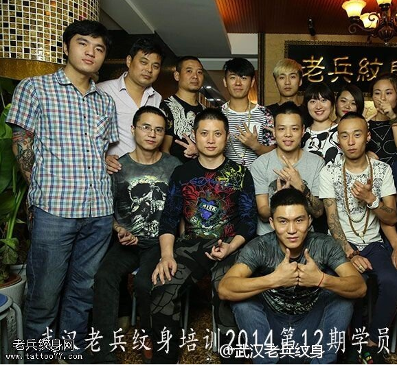
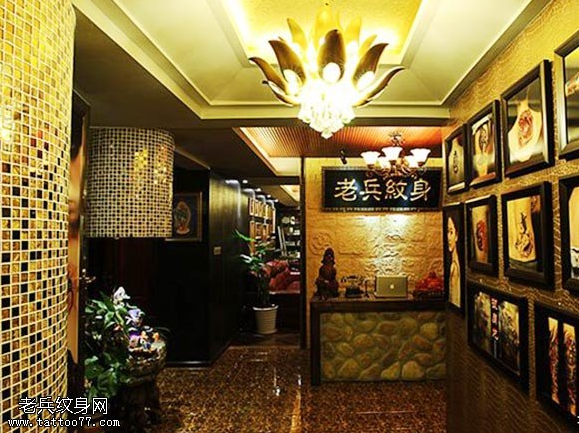
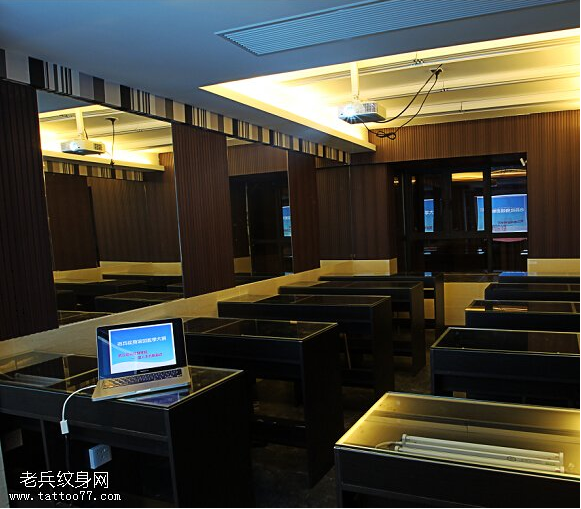

行业前景
Industry peosoped
国内方面：
国际方面：
纹身在中国：


一、报名条件
二、报名方法
三、注意事项
- 学员入学后，因个人原因中途退学或因违反国家法 律法规及其它教学管理规定被劝退、勒令退学的学 员一律不办理退费手续。
- 学员学习期满，考核合格者颁发学校结业证书。
- 教学承诺：手把手教学，包教包会。学习认真考试 合格者长期免费推荐工作，后期可免费返校进修同 类班。
- 招生信息解释权归武汉老兵纹身培训学校穿孔培训 中心。
详细情况请咨询

培训班次介绍
一、纹身精英班【学费3980元】
优惠条件：赠送开店纹身机豪华套装
和10G纹身图案大全
学
站位
时：包教包会，学会为止。
授课时间：周一至周六10:00-18:00
推荐指数：★★★★★
推荐理由：想全面掌握纹身技术，
更为专业从事纹身的人士。
课程介绍：
此课程针对开店创业学员，有无基础均可报名，无年龄
限制。主要从文身机的原理、特性、调试及保养维护。
文身中皮肤、器械、环境的消毒、纹身保养与文身的禁
忌等开始，结合文身中所需要的美术基础培训 （ 素描在
文身中的运用、色彩在文身中的运用 ），纹身位置的设
计与定位、小图转印技法及大图分割转印技法，，逐步
升级到实操，即文身技法训练：纹身的原理；纹身技术
刺法派系区别；纹身的发展阶段；纹身的工作流程；纹
身后的护理；纹身器材工具的名称与用途；纹身机的工
作原理、结构，调试及维护保养；纹身针的分类，及如
何根据图案合理选择针；纹身部位的设计；转印技巧；
深度剖析刺法；基础绘画知识：透视，远近，虚实，抓
型，构图，线条与面的关系；纹身针的常识；纹身时出
针的速度与手移动速度，机器频率的快慢，电流的大小，
出针长短，机器弹片的软硬等对纹身效果的影响；纹身
机的调试装配方法等；纹身技法技巧：板雾，线条，图
腾，素描，毛发，裂纹，彩色，黑白，传统，欧美以及
3D纹身技法等等不同的用针方式和刺法技巧。色料的深
入了解：纹身色料的认识，黑白色料的调配，彩色色料
的调配；开店创业指导等等，同时纹身现场观摩，学习
深层技法与宝贵经验，学员达到一定技术水平后，均可
在模特身上进行文身真人实操。